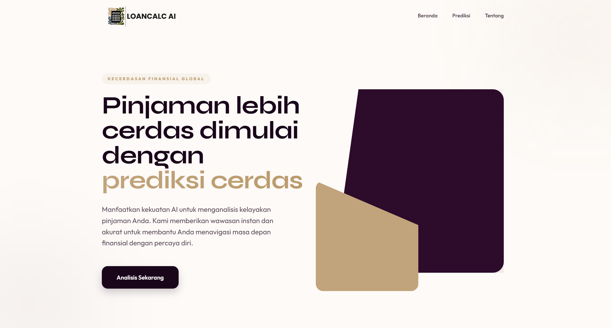

AI/ML, Team project
LoanCalc AI
A web app that predicts loan approval instantly, using a Gradient Boosting model and a mapping from Indonesian SLIK credit categories to a CIBIL-style score.

The problem
Manual credit assessment is slow and varies between analysts, and Indonesian credit history does not plug directly into scoring models built around global scores.
Traditional credit review
- Takes long and is inconsistent between analysts
- Hard to weigh income, assets, and credit history together
SLIK OJK vs credit score
- Credit history in Indonesia is recorded as collectibility categories (Kol 1 to Kol 5)
- No automated bridge from SLIK into an ML prediction model
The solution
- An instant prediction combining financial profile, assets, and credit collectibility
- SLIK categories mapped automatically to a numeric score for the model
The app
A simple flow: fill in the applicant’s details, pick the SLIK category, and get the result. Below are the screens in order, then two sample cases side by side. Click any screen to see it full size.
Home
A hero with one clear action: start the analysis.
About and how it works
The idea behind the app, and a four-step look at how a prediction is made.
Prediction form
The empty form: personal profile, finances, the SLIK category, and four asset fields.
Case 1: ApprovedApproved
A strong profile: SLIK Kol 1 (Current), income 9,000,000, and a loan of 15,000,000 over 24 months.
Case 2: RejectedRejected
A weaker profile: SLIK Kol 4 (Doubtful), income 2,400,000, and a loan of 28,000,000 over 36 months.
Two cases side by side
Same form, very different inputs. The widest gap is the SLIK category, which the backend turns into a score of 800 for Kol 1 and 450 for Kol 4.
| Kolom | Kasus 1 | Kasus 2 |
|---|---|---|
| Tingkat Pendidikan | S1/S2/S3 (Graduate) | Pendidikan di Bawah S1 (Not Graduate) |
| Wirausaha? | Tidak | Ya |
| Jumlah Tanggungan | 2 | 4 |
| Pendapatan Tahunan | 9.000.000 | 2.400.000 |
| Jumlah Pinjaman Diajukan | 15.000.000 | 28.000.000 |
| Tenor Pinjaman (Bulan) | 24 | 36 |
| Skor Kredit (Kategori SLIK) | Kol 1 (Lancar) | Kol 4 (Diragukan) |
| Aset Residensial | 6.000.000 | 800.000 |
| Aset Komersial | 4.000.000 | 500.000 |
| Aset Mewah | 15.000.000 | 2.500.000 |
| Nilai Aset Bank | 5.000.000 | 600.000 |
| Hasil | Disetujui | Ditolak |
Field names and values are shown as they appear on the app’s form, which is in Indonesian.
Data and exploration
Public Kaggle dataset, clean and without missing values, with a binary target (Approved or Rejected).
What the data showed
- The credit score is the strongest signal for approval (correlation +0.77)
- Income is strongly tied to luxury assets (0.93) and bank assets (0.85), so the asset features overlap
- Income and assets alone have very low linear correlation with the target, which points to non-linear patterns
Credit score ranges
- 300 to 500 (Kol 4 and 5): mostly rejected, only 10.5% approved
- 500 to 600 (Kol 3): borderline, about 50/50, so assets and income decide
- 600 to 900 (Kol 1 and 2): almost all approved, only 11 rejections out of 2,125
How it works
Supervised learning, binary classification on tabular data.
Input
11 applicant features: profile, finances, and four asset values.
Preprocessing
scikit-learn pipeline: median/mode imputation, ordinal encoding, standard scaling.
Modeling
5 models compared with stratified 5-fold cross validation.
Output
Approved or Rejected, shown on the page.
SLIK to score mapping
The model was trained on a numeric credit score, so the backend converts the category the user picks:
| SLIK | Meaning | Score |
|---|---|---|
| Kol 1 | Current | 800 |
| Kol 2 | Special mention | 650 |
| Kol 3 | Substandard | 550 |
| Kol 4 | Doubtful | 450 |
| Kol 5 | Loss | 350 |
Results
Evaluated on a held-out test set of 854 samples (20% split, stratified).
| Model | Accuracy | Precision | Recall | F1 | ROC-AUC |
|---|---|---|---|---|---|
| Gradient Boosting | 0.9871 | 0.9869 | 0.9925 | 0.9897 | 0.9983 |
| XGBoost | 0.9848 | 0.9850 | 0.9906 | 0.9878 | 0.9982 |
| Random Forest | 0.9801 | 0.9813 | 0.9868 | 0.9840 | 0.9986 |
| SVM | 0.9461 | 0.9567 | 0.9567 | 0.9567 | 0.9883 |
| Logistic Regression | 0.9122 | 0.9191 | 0.9416 | 0.9302 | 0.9726 |
Gradient Boosting was chosen as the final model. In cross-validation, XGBoost scored marginally higher (F1 0.9876 vs 0.9873), while on the test set Gradient Boosting was ahead (98.71% vs 98.48% accuracy). The tree-based models were very close to each other, and a gap this small could be chance rather than a real difference.
Deployment
One Flask app holds the interface, the SLIK mapping, and the saved model pipeline, deployed on Vercel over HTTPS.
Form
The user fills in the HTML form and picks a SLIK category.
Flask
The form is sent by POST to the /predict endpoint.
Pipeline
SLIK is converted to a score, then the saved scikit-learn pipeline predicts.
Result
The decision (Approved or Rejected) appears on the page.
User testing
5 people filled in a Likert survey (1 to 5, 8 questions) and another 5 joined structured interviews (7 open questions).
What worked
- Modern, tidy interface that people of different ages could use
- Fast prediction with an easy-to-read result; none of the survey respondents felt confused
Pain points
- Too many asset fields, so filling the form felt impractical
- The name and identity were not memorable enough
Limits and next steps
Limitations
- The Kaggle dataset is clean and not fully representative of Indonesian applicants, so ~98% may be lower on real data
- The SLIK-to-score mapping is a heuristic, not built from real OJK data
- No behavioural features, no automatic retraining, not load-tested
- Model selection used the test set as a tiebreaker between near-identical models, so the final scores may be slightly optimistic
Next steps
- Real SLIK data through an OJK API
- Payment history and debt-to-income features
- SHAP and LIME to explain each decision
- Automatic retraining to handle concept drift
My contribution
A team project for the Machine Learning course at BINUS University, built by three people (Group 2). All three of us worked on the ML and EDA, and I also took the frontend of the web app and helped prepare the presentation slides.
Machine learning
- Exploring the dataset and how each feature relates to approval
- Comparing five classification models with stratified 5-fold cross-validation
- Evaluating the final Gradient Boosting model on the test set
Web app, testing, and presentation
- Designing the interface and building the pages with HTML, CSS, and JavaScript
- Building the prediction form with the SLIK category dropdown
- Interviewing respondents for the user testing and collecting their feedback
- Helped prepare the project presentation slides with the team